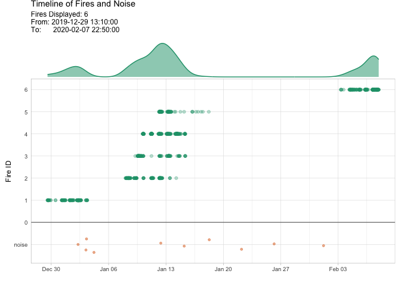

The goal of spotoroo is to …
Installation
You can install the development version from GitHub with:
install.packages("devtools")
devtools::install_github("TengMCing/spotoroo")Example
This is a basic example which shows you how to solve a common problem:
library(spotoroo)The built-in dataset hotspots_fin.
str(hotspots_fin)
#> 'data.frame': 1070 obs. of 3 variables:
#> $ lon : num 147 146 143 149 142 ...
#> $ lat : num -37.5 -37.9 -37.8 -37.4 -37.1 ...
#> $ obsTime: POSIXct, format: "2020-02-01 05:20:00" "2020-01-02 06:30:00" ...
hotspots_fin[1:10,]
#> lon lat obsTime
#> 1 147.46 -37.46000 2020-02-01 05:20:00
#> 2 146.48 -37.93999 2020-01-02 06:30:00
#> 3 143.44 -37.82000 2020-01-03 07:20:00
#> 4 149.30 -37.36000 2020-01-22 05:10:00
#> 5 142.14 -37.06000 2020-01-18 06:40:00
#> 6 142.16 -37.50000 2020-01-03 05:40:00
#> 7 149.42 -37.34000 2020-01-26 04:40:00
#> 8 147.68 -36.62000 2020-01-04 05:10:00
#> 9 148.48 -37.40000 2020-01-15 05:20:00
#> 10 148.04 -36.38000 2020-01-12 08:50:00
library(tidyverse)
vic_map +
geom_point(data = hotspots_fin, aes(lon, lat), alpha = 0.3) +
ggtitle("Raw Hotspots")
Perform spatiotemporal clustering on this dataset. You need to provide the data, here it is “hotspots_fin”, specify which columns correspond to the spatial variables (lon, lat), and which to time steps (obsTime). There is a choice of options for the algorithm. “activeTime” sets the time to consider that a fire can be active, and longer than this between hotspots will create a new cluster. “adjDist” sets the maximum spatial distance between hotspots beyond which they would be considered part of a different cluster.
result <- hotspot_cluster(hotspots_fin,
lon = "lon",
lat = "lat",
obsTime = "obsTime",
activeTime = 24,
adjDist = 3000,
minPts = 4,
minTime = 3,
ignitionCenter = "mean",
timeUnit = "h",
timeStep = 1)
#>
#> ------------------------------ SPOTOROO 0.0.0.9000 -----------------------------
#>
#> -- Calling Core Function : `hotspot_cluster()` --
#>
#> -- 1 time index = 1 hours
#> v Transform observed time > time indexes
#> i 970 time indexes found
#>
#> -- activeTime = 24 time indexes | adjDist = 3000 meters
#> v Cluster
#> i 16 clusters found (including noise)
#>
#> -- minPts = 4 hotspots | minTime = 3 time indexes
#> v Handle noise
#> i 6 clusters left
#> i noise proportion : 0.934579439252336 %
#>
#> -- ignitionCenter = 'mean'
#> v Compute ignition points for clusters
#> i average hotspots : 176.7
#> i average duration : 131.9 hours
#>
#> -- Time taken = 0 mins 3 secs for 1070 hotspots
#> i 0.003 secs per hotspot
#>
#> --------------------------------------------------------------------------------The ignition points of the bushfires.
result$ignition
#> membership lon lat obsTime timeID obsInCluster
#> 1 1 149.3000 -37.77000 2019-12-29 13:10:00 1 146
#> 2 2 146.7200 -36.84000 2020-01-08 01:40:00 229 165
#> 3 3 149.0200 -37.42000 2020-01-09 06:10:00 258 126
#> 4 4 149.1600 -37.29000 2020-01-10 04:10:00 280 256
#> 5 5 146.7067 -36.99333 2020-01-12 04:00:00 327 111
#> 6 6 149.8400 -37.46000 2020-02-03 07:40:00 859 256
#> clusterTimeLen clusterTimeLenUnit
#> 1 116.1667 hours h
#> 2 148.3333 hours h
#> 3 146.3333 hours h
#> 4 124.1667 hours h
#> 5 145.3333 hours h
#> 6 111.1667 hours hThe memberships of the first 10 hotspots.
result$hotspots[1:10,]
#> lon lat obsTime timeID membership noise distToIgnition
#> 1 147.46 -37.46000 2020-02-01 05:20:00 809 -1 TRUE 0
#> 2 146.48 -37.93999 2020-01-02 06:30:00 90 -1 TRUE 0
#> 3 143.44 -37.82000 2020-01-03 07:20:00 115 -1 TRUE 0
#> 4 149.30 -37.36000 2020-01-22 05:10:00 569 -1 TRUE 0
#> 5 142.14 -37.06000 2020-01-18 06:40:00 474 -1 TRUE 0
#> 6 142.16 -37.50000 2020-01-03 05:40:00 113 -1 TRUE 0
#> 7 149.42 -37.34000 2020-01-26 04:40:00 664 -1 TRUE 0
#> 8 147.68 -36.62000 2020-01-04 05:10:00 137 -1 TRUE 0
#> 9 148.48 -37.40000 2020-01-15 05:20:00 401 -1 TRUE 0
#> 10 148.04 -36.38000 2020-01-12 08:50:00 332 -1 TRUE 0
#> distToIgnitionUnit timeFromIgnition timeFromIgnitionUnit
#> 1 m 718.8333 hours h
#> 2 m 718.8333 hours h
#> 3 m 718.8333 hours h
#> 4 m 718.8333 hours h
#> 5 m 718.8333 hours h
#> 6 m 718.8333 hours h
#> 7 m 718.8333 hours h
#> 8 m 718.8333 hours h
#> 9 m 718.8333 hours h
#> 10 m 718.8333 hours hPlot of the result. In this example, there is a total of 6 clusters, so all can be displayed.
plot(result, bg = vic_map)
You can also choose a subset of clusters, and this will plot withou a map, so that you can see a zoomed in view of the hotspot clusters and their ignition points.

To examine the fire movements, use the option “mov”, and the movement will be shown as connected lines between centroids at each time step, for each cluster.
plot(result,
type = "mov",
cluster = 1:6,
step = 3,
hotspot = TRUE,
bg = vic_map)
To examine the time line of clusters, to learn about intensity of fire periods use the option “timeline”.
plot(result, "timeline",
dateLabel = "%b %d",
mainBreak = "1 week")